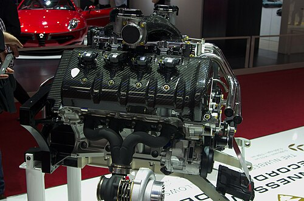
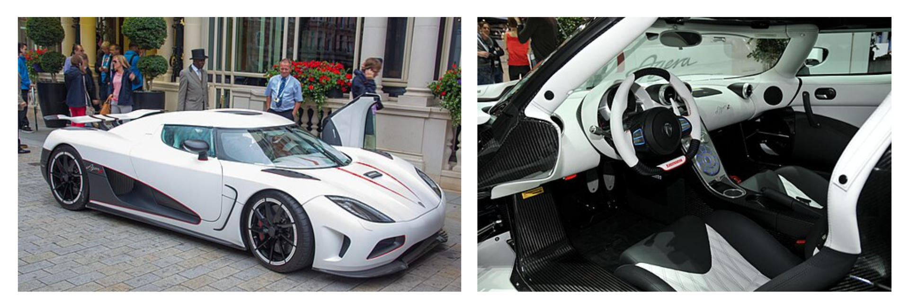

Sejarah

Koenigsegg Agera adalah mobil sport bermesin tengah yang diproduksi oleh produsen mobil Swedia, Koenigsegg.
Mobil ini merupakan penerus CCX/ CCXR. Namanya berasal dari kata kerja bahasa Swedia 'agera' yang berarti "bertindak" atau dalam bentuk imperatif "(Anda) bertindak".
Mobil ini dinobatkan sebagai Hypercar of the Year pada tahun 2010 oleh majalah Top Gear. Varian Agera RS menjadi mobil produksi tercepat di dunia pada tahun 2017,
mencetak rekor dengan kecepatan tertinggi rata-rata dua arah yang diverifikasi GPS sebesar 447 km/jam (278 mph) dan kecepatan garis lurus tercepat sebesar 458 km/jam (285 mph).
Agera berhenti diproduksi pada Juli 2018 dengan peluncuran dua mobil edisi terakhir di Goodwood Festival of Speed 2018.
Digantikan oleh Jesko pada tahun 2019.
Spesifikasi
Mesin dan transmisi

Dalam pengembangan awal, mobil ini dilengkapi dengan mesin V8 4,7 liter dengan twin-turbocharger fixed-vane,
tetapi mesinnya diganti dengan mesin V8 5,0 liter yang dikembangkan sendiri dan dilengkapi dengan twin-turbocharger yang menghasilkan daya maksimum 706 kW (960 PS; 947 hp)
pada 6.900 rpm dan torsi 1.100 N.m (811 lbf.ft) pada 4.000 rpm.
Berat total mesin hanya 197 kg (434 lb) karena manifold saluran masuk serat karbon dan konstruksi aluminium.
Transmisinya adalah kopling ganda CIMA 7 kecepatan yang dikembangkan khusus dengan paddle shifter.
Ini adalah transmisi kopling ganda pertama yang hanya memiliki satu poros input.
Kopling kedua memperlambat poros input saat perpindahan gigi ke atas untuk mengurangi waktu sinkronisasi gigi berikutnya,
sehingga waktu perpindahan gigi menjadi lebih cepat. Yang paling menonjol, transmisi ini hanya berbobot 81 kg (179 lb).
Kinerja
Kinerja (data yang diklaim produsen):
- 0-100 km/jam (0-62 mph) dalam 2,8 detik
- 0-200 km/jam (0-124 mph) dalam 8,0 detik
Kecepatan tertinggi untuk model produksi diklaim mencapai 400 km/jam (249 mph).
Eksterior dan Interior

Agera memiliki bodi yang terbuat dari serat karbon / kevlar yang diresapi dengan penguat ringan.
Atap hardtop mobil dapat disimpan di bawah tutup kap depan. Sasisnya juga terbuat dari serat karbon dengan struktur sarang lebah aluminium yang dilengkapi dengan tangki bahan bakar terintegrasi untuk distribusi berat dan keselamatan yang optimal.
Sayap belakang dapat disesuaikan secara elektronik dengan pengaturan otomatis atau kontrol manual untuk meminimalkan kompromi antara hambatan rendah dan downforce, tergantung pada kondisi berkendara.
Agera dilengkapi dengan roda aluminium tempa dengan mur pengunci tengah, berukuran 19 inci di depan dan 20 inci di belakang dan dibungkus dengan satu set ban Michelin Super Sport yang dapat digunakan untuk kecepatan hingga 420 km/jam (260 mph).
Fitur penting lainnya termasuk pintu "dihedral-synchro-helix-actuation" yang menjadi ciri khasnya, sistem kontrol traksi baru, lampu LED, garis kap merah yang berlanjut hingga kokpit mobil, dan interior khusus dengan sistem pencahayaan "Ghost light" baru,
yang menggunakan karbon nanotube dalam konfigurasi unik untuk bersinar melalui tombol aluminium mobil.
Model Lainnya
Koenigsegg Agera R (2011-2014)

Agera R memulai debutnya di Geneva Motor Show Maret 2011 dengan livery Speed Racer, dan ban Michelin khusus.
Mobil ini dapat berakselerasi dari 0-100 km/jam (0-62 mph) dalam 2,8 detik dan mencapai kecepatan tertinggi teoritis 439 km/jam (273 mph).
Agera R memiliki koefisien hambatan Cd = 0,37, atau Cd = 0,33 pada kecepatan tinggi karena sayap belakang adaptifnya, sambil menghasilkan downforce 300 kg (660 lb) pada 250 km/jam (155 mph).
Sistem sayap belakang adaptif ini lebih ringan daripada sistem adaptif hidrolik/listrik konvensional, dan memiliki kemampuan unik untuk mengimbangi angin dari depan/belakang karena desainnya yang berpegas.
Selain itu, tiang yang menahan sayap tidak hanya berperan dalam performa aerodinamis Agera R, tetapi juga membantu dalam mengekstraksi udara panas dari ruang mesin.
Pada tanggal 2 September 2011, selama sesi uji di Ängelholm , Agera R memecahkan enam rekor kecepatan darat dunia untuk mobil produksi, termasuk 0-300 km/jam (0-186 mph) dalam 14,53 detik, dan 0-300-0 km/jam hanya dalam 21,19 detik.
Performa pengereman yang diperlukan untuk mempertahankan rekor ini dimungkinkan sebagian oleh stabilitas Agera, yang ditunjukkan oleh pengemudi uji Koenigsegg dan teknisi drivetrain Robert Serwanski, yang direkam oleh penumpang Rob Ferretti (pendiri grup "Super Speeders") mengerem dari 300 km/jam ke 0 tanpa memegang kemudi.
Agera R dapat menghasilkan gaya menikung lateral sebesar 1,60 G, karena kombinasi keseimbangan mekanis dan cengkeraman tingkat tinggi dari ban Michelin Supersport yang dikembangkan secara khusus.
Agera R versi 2013 pertama kali diperkenalkan di Geneva Motor Show 2012. Peningkatan yang dilakukan meliputi velg serat karbon, aerodinamika yang ditingkatkan, dan peningkatan mesin yang memungkinkan mesin V8 twin-turbo Agera R menghasilkan tenaga 1.140 PS (1.124 hp; 838 kW) pada 7.100 rpm dan torsi 1.200 N⋅m (885 lb⋅ft) pada 4.100 rpm dengan bahan bakar biofuel E85.
Teknologi Flex Fuel Sensor dari Koenigsegg memungkinkan ECU merespons perubahan kualitas bahan bakar dan kadar alkohol dengan mengurangi tingkat daya sebagai cara untuk melindungi mesin.
Pada bahan bakar oktan rendah standar, daya berkurang menjadi 960 PS (706 kW; 947 hp).
Koenigsegg Agera S (2013-2014)

Koenigsegg memperkenalkan model Agera S pada tahun 2013. Dibuat untuk pasar yang kekurangan biofuel E85, Agera S memiliki sebagian besar peningkatan dari Agera R dibandingkan dengan Agera normal termasuk sayap dinamis,
tetapi dioptimalkan untuk berjalan pada bensin oktan rendah yang menghasilkan output daya maksimum 1.030 PS (758 kW; 1.016 hp) dan torsi 1.100 N⋅m (811 lbf⋅ft)
dibandingkan dengan 960 PS (706 kW; 947 hp) dan torsi 1.100 N⋅m (811 lbf⋅ft) dari Agera R yang berjalan pada bahan bakar yang sama.
Pada tahun 2013, satu Agera S adalah Koenigsegg ke-100 yang pernah diproduksi, dirayakan oleh mobil yang dibuat khusus dengan tatahan daun emas bernama "Hundra" (bahasa Swedia untuk "seratus").
Koenigsegg One:1 (2014–2015)

Koenigsegg One:1 diperkenalkan pada Geneva Motor Show 2014 yang diadakan pada bulan Maret. Koenigsegg membuat enam mobil selain mobil yang diperkenalkan pada Geneva Motor Show, yang semuanya sudah terjual.
Koenigsegg membawa dua mobil ke Goodwood Festival of Speed 2014, di mana mereka dipamerkan bersama mobil sport lainnya seperti McLaren P1, LaFerrari, Porsche 918 Spyder dan Pagani Huayra.
Mobil ini dilengkapi dengan varian mesin V8 twin-turbocharged 5.0 L yang sama dengan yang digunakan pada varian Agera lainnya.
Mesin ini menghasilkan tenaga maksimum 1.360 PS (1.000 kW; 1.341 hp) pada 7.500 rpm dan torsi 1.371 N⋅m (1.011 lb⋅ft) pada 6.000 rpm.
Transmisinya menggunakan paddle shift kopling ganda 7-percepatan seperti yang digunakan pada varian Agera lainnya.
Nama One:1 berasal dari rasio daya terhadap berat (1.360 PS berbanding 1.360 kg) yang menghasilkan 1 PS per 1 kg massa.
Output daya 1.360 PS setara dengan satu megawatt, yang diklaim Koenigsegg menjadikan One:1 'mobil mega pertama di dunia'.
Mobil ini berfokus pada trek balap, berbeda dengan mobil-mobil Koenigsegg sebelumnya, sehingga menghasilkan perubahan seperti ruang bagasi yang terbatas.
Koenigsegg Agera RS (2015–2018)

Agera RS diluncurkan di Geneva Motor Show 2015, bersama dengan versi prototipe Regera. Agera RS adalah versi lanjutan dari Agera R, yang menerapkan beberapa teknologi dan fitur baru One:1 dan menggabungkan fitur Agera R dan Agera S.
Koenigsegg menyebutnya sebagai "ultimate track tool" karena fitur ringan dan teknologi lintasan yang dioptimalkan. Agera RS menghasilkan downforce 450 kg pada 250 km/jam.
Mesin V8 5.0 liter sekarang memiliki tenaga 1.176 PS (865 kW; 1.160 hp) pada bensin pompa biasa. Paket 1 megawatt opsional meningkatkan tenaga mesin menjadi 1.360 PS (1.000 kW; 1.341 hp).
Sebanyak 27 unit Agera RS dibuat. Model ini awalnya akan dibatasi hanya 25 unit, namun dua mobil tambahan dibangun, satu menjadi mobil pengembangan pabrik dan satu sebagai pengganti mobil pelanggan yang rusak saat digunakan untuk pengujian shakedown (Agera RS Phoenix dibangun setelah kecelakaan Agera RS Gryphon).
Agera RS memiliki konsumsi bahan bakar sebesar 21 L/100 km (11 mpg ‑US) di dalam kota dan 13 L/100 km (18 mpg ‑US) di jalan raya yang rata-rata mencapai 18 L/100 km (13 mpg ‑US ).
Agera RS terakhir keluar dari jalur produksi pada tanggal 4 April 2018.